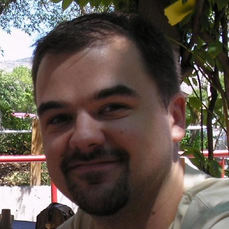
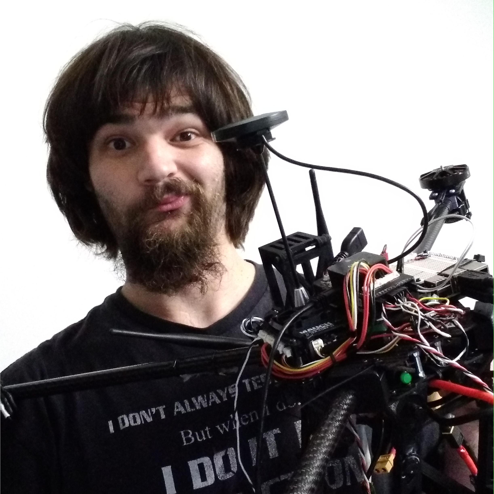
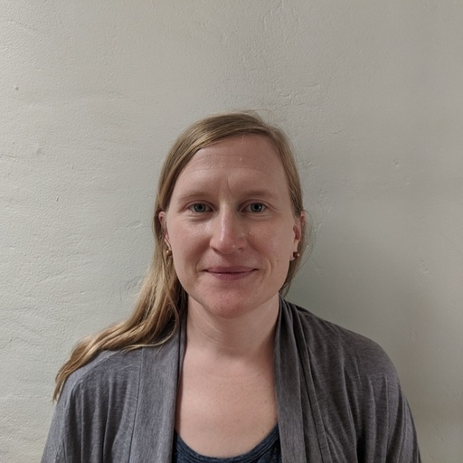
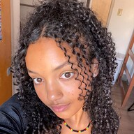
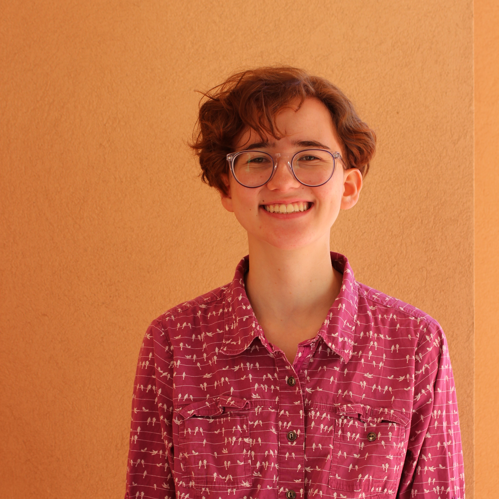

|
Dr. Melanie Moses
- Principle Investigator
- Professor, Department of Computer Science
- Professor, Biology Department
- External Faculty, Santa Fe Institute
We live in a complex world. From the spread of disease in increasingly interconnected human
populations to the impact of fossil-fueled economies on global climate, the greatest challenges in
modern science and engineering require understanding complex systems, what makes them efficient and
resilient, and why they fail. My lab studies complex biological systems including the adaptive
immune system and ant colonies. I use this understanding to design efficient, robust, adaptive and
scalable engineered systems, including autonomous robots that mimic ant behaviors to collect
resources cooperatively.
|
 |
Dr. Matthew Fricke
- Research Assistant Professor, Department of Computer Science
- Research Assistant Professor, Center for Advanced Research Computing
VolCAN requires the coordination of distributed robot swarms to successfully search in large
hazardous regions. My work falls into three related categories: distributed biological processes
(e.g. chemical reaction networks, immunological and social-insect search processes, and neural
networks), parallel supercomputing, and algorithms for robot swarms. Robots can explore areas too
dangerous for humans and therefore help to answer basic scientific questions. In the VolCAN project,
we designed and built aerial robots and algorithms to sample gasses from volcanos. This data
contributes to our understanding of climate change, the prediction of eruptions, and how best to
coordinate teams of robot scientists in general.
|
|  |
John Ericksen
- Research Assistant
- PhD Student: Department of Computer Science
John Ericksen is a software developer with Honeywell Federal Manufacturing and Technologies and a
computer science Ph.D. student at the University of New Mexico with the Moses Biological Computation
Lab. Working with the earth and planetary sciences department, John's research focus is on
autonomous airborne robot swarms used to sample volcanic C02 plumes. The goal of this is to link
volcanic C02 output with volcanic behavior to better understand the precursors to life-threatening
eruptions. John has also published on a variety of other research topics including software
architecture, evolutionary complex systems, and intelligent swarm robotics.
|
|  |
Carter Frost
- Student Technical Specialist
- Undergraduate: Department of Computer Science
- Senior Student Trouble Maker
Carter is a transfer student from Santa Cruz, California he is just starting his second semester
here at UNM. For over 10 years he worked in cybersecurity working on private key infrastructure
like national ID systems, Certificate management and private key storage systems called HSMs.
So he worked on systems that establish and maintain trust. He has been teaching at Cabrillo
College/PVUSD engineering camps well over the 7 years, as well as teaching as a supplemental
instructor at Cabrillo College. Carter got into robotics ~5 years ago initially through his local
community college in California (Cabrillo College's) Robotics club. He worked remotely with UNM's
Moses Biological Computation Lab on various projects like with NASA's Houston space center on a new
class of rovers for the Moon & Project chili house. He has made the move out out to Albuquerque and
is now working on UNM's VolCAN team as well as working on Swarmathon TNG.
|
|  |
Julie Hayes
- Research Assistant
- Phd Student: Department of Computer Science
TBD
|
|
Ellie Larence
Ellie Larence is an undergraduate at the University of New Mexico (UNM). She has a bachelor’s degree in biology and worked as a molecular biologist at the New Mexico Department of Health before returning to UNM to study computer science. Previous research projects Ellie has worked on include characterizing morphological variation in American marten and evaluating the performance of deep learning models. Currently, she is working with Dr. Melanie Moses to develop an agent-based model of SARS-CoV-2 infection, using supercomputing resources to simulate the effects of the innate immune response on viral infections. She is also an active member of UNM’s supercomputing team, participating in national competitions building, running, profiling, and optimizing HPC applications on multiple computing systems. Ellie is broadly interested in applying computational techniques to challenging biomedical research questions and is particularly excited by machine learning applications to genomic data. She plans to pursue a Ph.D. focusing on problems in computational genomics.
|
 |
Akil Andrews
I am Akil Andrews a PhD student in the Department of Computer Science at UNM. My research interest's are in artificial intelligence, machine learning, evolutionary algorithms, artificial life, and computational science. My goal is to research algorithms that mimic life. I also enjoy following research in particle physics, classical and quantum mechanics, general relativity, and cosmology. My personal belief is that technology will one day answer the origin and meaning of life. After graduation with my Doctoral degree, I plan to join research efforts in pursuit of the answer.
|
|
Jannatul Ferdous
- Graduate Research Assistant
Jannatul Ferdous is a Ph.D. student in the Department of Computer Science at the University of New Mexico. She holds an MSc in Computer Science from the same institution and earned her BSc in Computer Science from the University of Dhaka, Bangladesh. She is doing her Ph.D. under the direct supervision of Dr. Melanie Moses in the Moses Biological Computation Lab. Additionally, she serves as a graduate intern at Los Alamos National Lab. Jannatul is at the forefront of interdisciplinary research, connecting computer science and biology. Her research is centered on the intricate world of biological systems, with a specific focus on the immune systems. Her work involves the development of computational and mathematical models, utilizing techniques such as Agent-Based Modeling (ABM), simulations, and advanced statistical tools. Her personal website link: https://www.cs.unm.edu/~jannat
|
 |
Calvin Stahoviak
TBD
|
 |
Humayra Tasnim
TBD
|
 |
Jake Nichol
TBD
|
 |
Karlie Powell
TBD
|
|
Kevin Fotso
TBD
|
 |
Sachi Barnaby
TBD
|